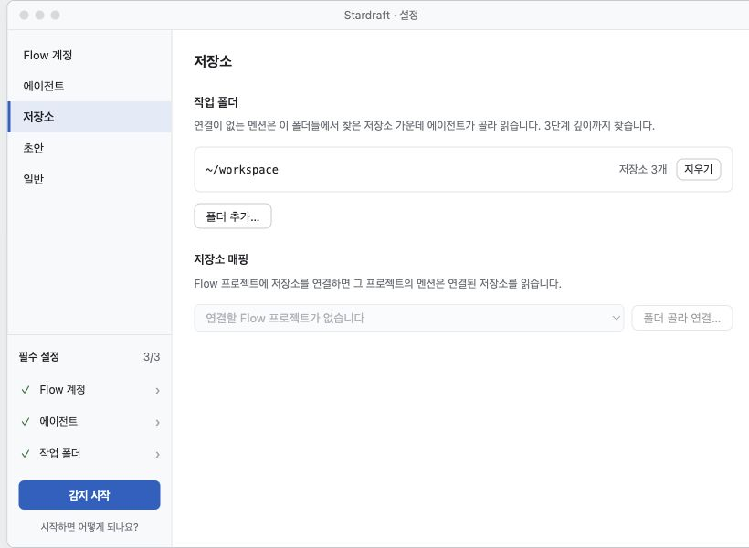
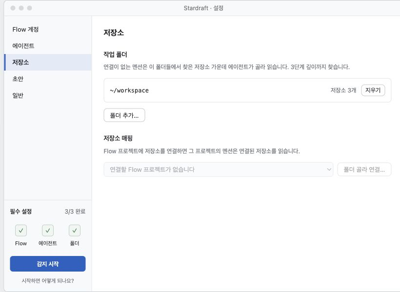
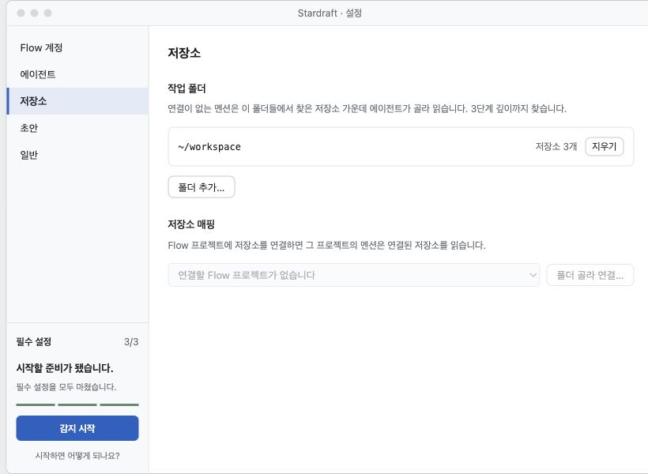
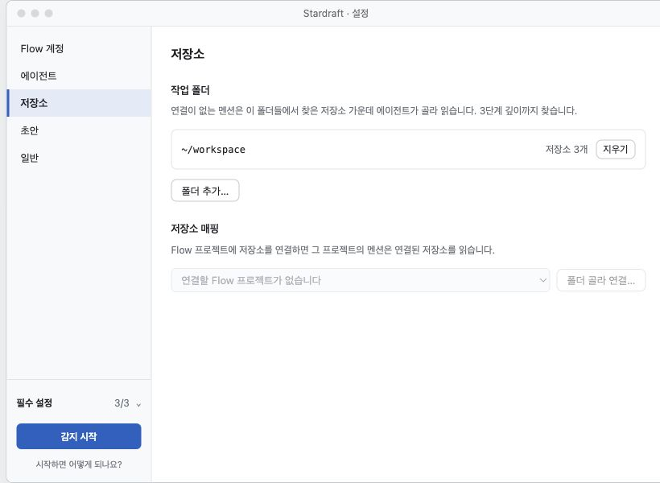
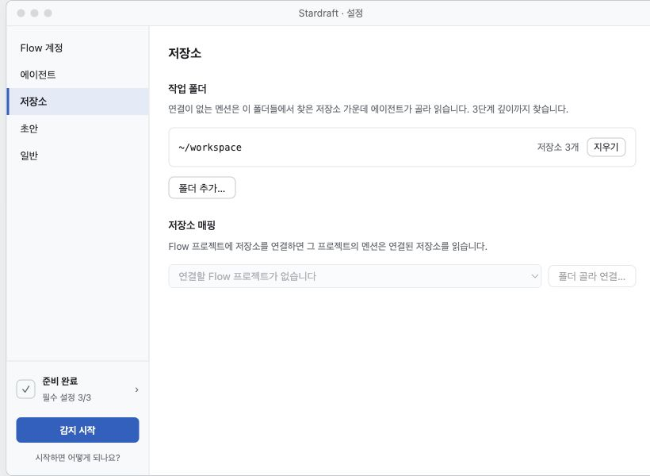

전체 완료 상태의 사이드바를 같은 크기로 비교합니다. 초안을 누르면 직접 조작할 수 있습니다.
세 항목을 항상 표시

상태를 짧게 모아 표시

남은 설정부터 안내

필요할 때 목록 펼치기

옆 패널에서 상태 확인

D 추천: 기본 화면은 가장 짧게, 상세는 눌러서 확인합니다. 설정이 처음인 사람에게는 A가 더 명확합니다.
상단 안내 띠 없음 · 기존 사이드바 폭 180px 유지 · 시작 버튼은 좌측 하단 · 실제 앱 변경 없음